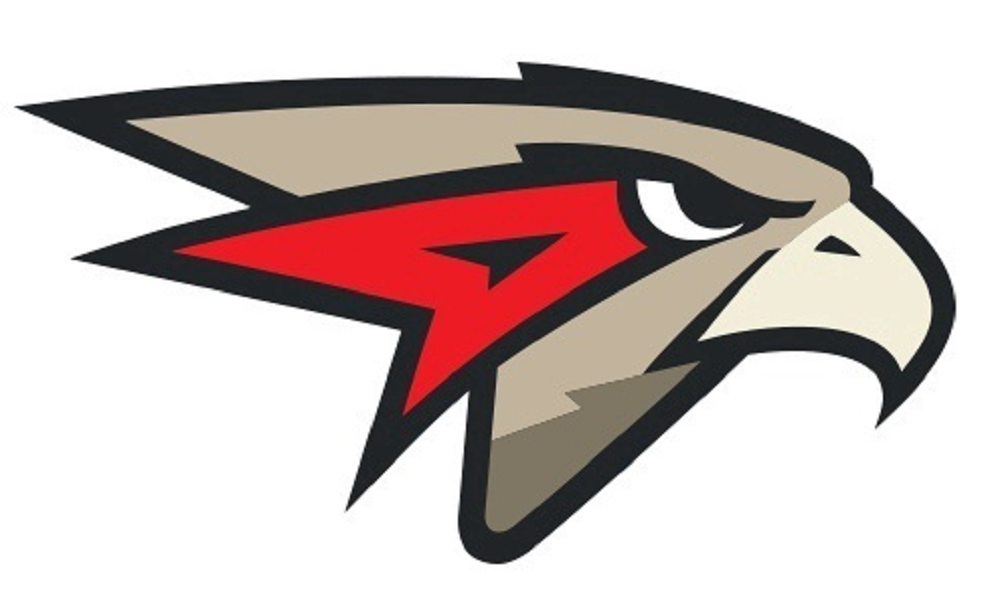
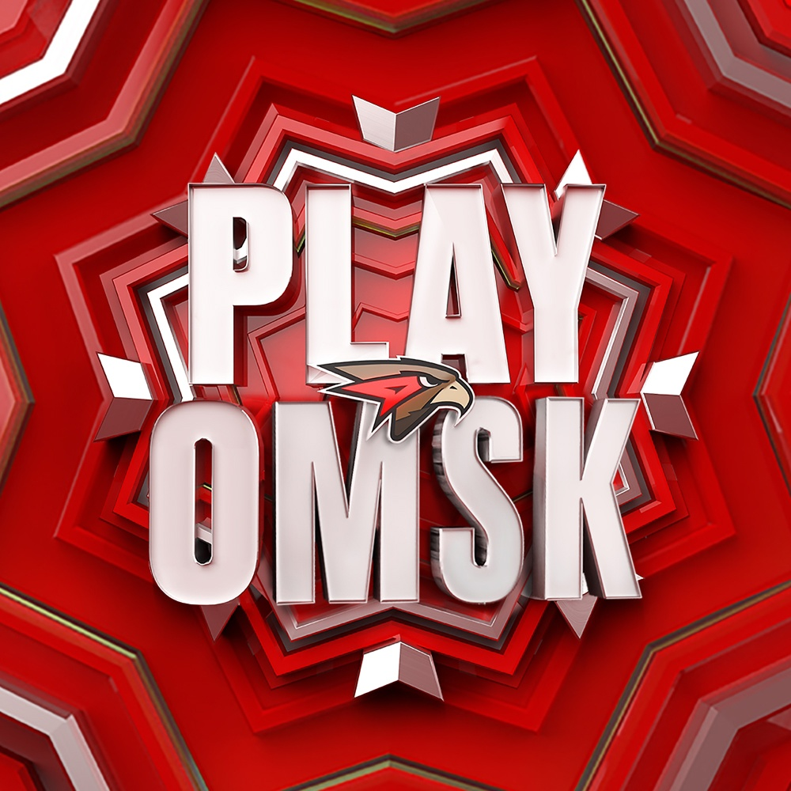
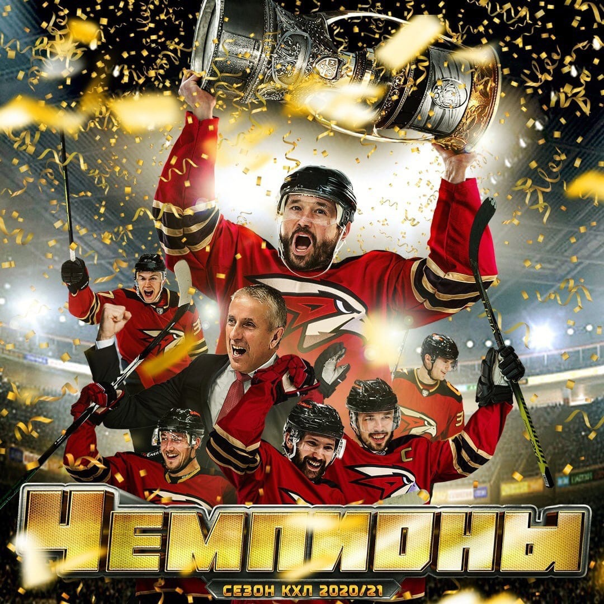

Омский Спорт
Хоккейная команда Авангард

Главная
Авангард


«Хоккейный клуб «Авангард»
Профессиональный хоккейный клуб из города Омска, выступающий в Континентальной хоккейной лиге. Клуб основан 7 ноября 1950 года.
Выступал под названиями:
«Спартак» (1950—1962)
«Аэрофлот» (1962—1967)
«Каучук» (1967—1972)
«Химик» (1972—1974)
«Шинник» (1974—1981)
С 1981 года называется «Авангард». Выступает в КХЛ с момента основания лиги. Большие достижения и победы пришли к команде уже в новейшей истории, ХК «Авангард» стал одним из сильнейших клубов России и Европы. Не спроста Омские хоккеисты регулярно завоевывали медали престижных турниров. «Авангард» сегодня — это боеспособный коллектив КХЛ (конференция «Восток», дивизион Чернышева), регулярный участник игр плей-офф. В 2012 году команда имела все шансы для завоевания Кубка Гагарина, однако в финале турнира уступила московскому «Динамо». Отличительной особенностью команды является ее эмблема, символизирующая ястреба,именно ястреб является символом клуба, подчеркивая быстрый и классный хоккей в исполнении коллектива. Нам удалось сделать, казалось бы, невозможное: мы построили одну из лучших арен в России всего за два года. Хочу выразить благодарность за помощь правительству Российской Федерации, ПАО «Газпром нефть» и правительству Омской области, а также всем, кто участвовал в этом строительстве - моей команде. Как мы и обещали, «Авангард» вернулся в Омск – в свой новый дом, который, надеюсь, станет не только символом хоккейных побед, но и новым культурным центром города.
Добро пожаловать на G-Drive Арену, омичи! Новая глава в истории «Авангарда» и всего Омска начинается сегодня!